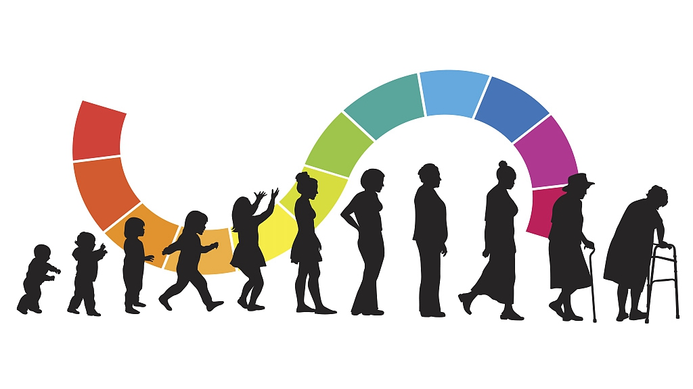

Thank you for being here! Let me tell you a little bit about myself...
I'm a Chemical Engineer by education but a Data Analyst by heart.
My background with Chemical Engineering allowed me to develop highly analytical skills but I discovered my real passion whenever I got to deal with complex data in my professional roles after graduating college.
I've held various roles such as Business Analyst, Business Developer, Cost Engineer and Business Consultant. The first and last are the ones that truly made me realize I have a passion for turning data into actionable insights.
I've done several professional certificates specializing in Data Analytics and Data Science where I have honed my skills in programming languages such as SQL, R and Python and visualization tools like Tableau and Power BI through diverse projects and case studies.
This portfolio showcases my journey in data analytics, highlighting key projects. I invite you to explore my work and connect with me for potential collaborations or opportunities.
In this project we take raw World Life Expectancy data and transform
it in MySQL ensuring data consistency for accurate analysis. The cleaned data can then be used for further exploratory analysis and reporting
.

Here we use MySQL to explore the previously cleaned World Life Expectancy data to identify trends, correlations, and insights that can be drawn from the data regarding life expectancy, GDP, BMI, and other factors.
This project involves analyzing the data to get a fair idea about the demand of different restaurants in order to help the company FoodHub to enhance business and customer experience.
This project involves creating an interactive Tableau dashboard to visualize and analyze British Airways reviews and it allows users to filter and explore the data by different dimensions .
This project provides detailed insights into the workforce of a company. It allows the HR department to track various employee metrics which are crucial for strategic HR planning, identifying areas for improvement, and enhancing overall employee satisfaction and retention.
In this project, we use real data from Paypal payments and products to make use of the Core Azure Services where we transform data, orchestrate pipelines and automate tasks and processes using Azure Data Factory, Azure Synapse Analytics and Azure Databricks.